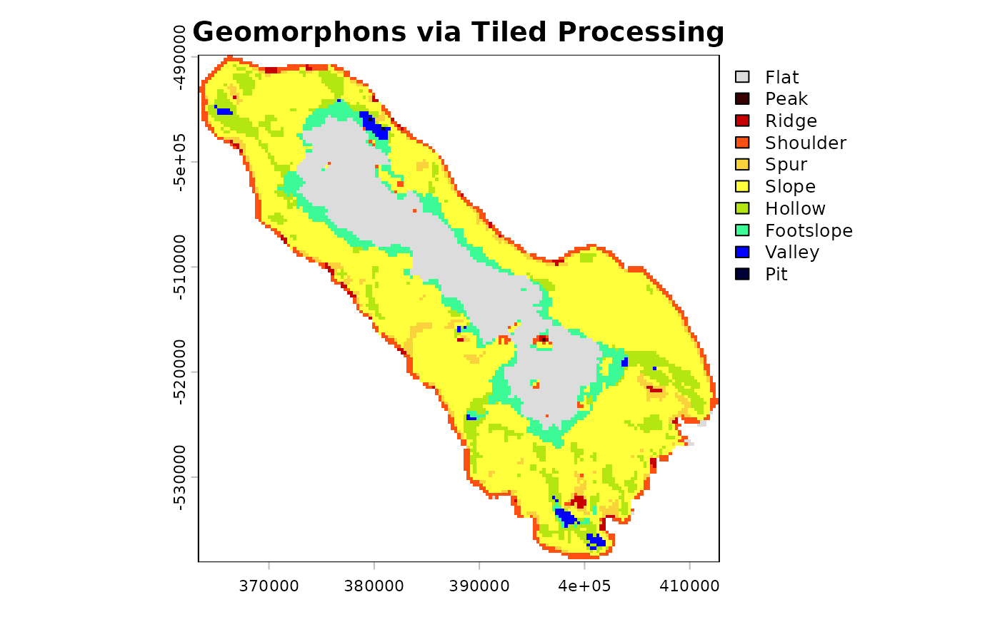

Parallel and Distributed Processing with 'rgeomorphon'
Source:vignettes/geomorphons-tiled.Rmd
geomorphons-tiled.RmdWhen working with large Digital Elevation Models (DEMs), calculating
geomorphons can be time-consuming. rgeomorphon can speed up
this process by using parallel and distributed processing. This vignette
explains how to set up and use the tiling and parallel processing
features of the package.
Working with Tiles
Parallel processing in rgeomorphon is achieved by
splitting the input raster into smaller tiles. Each tile is then
processed independently on a separate worker. The results are then
combined back into a single, seamless raster.
The number of tiles is estimated using terra::mem_info()
to identify raster memory requirements, amount of free memory, fraction
of memory that can be used by terra, number of “copies” of
the input data raster needed to complete processing, etc.
The tiled approach is used automatically when a raster is too large to fit in memory. However, you can either directly set the number of chunks to use, or set other factors related to relative memory usage constraints.
The Parallel Ecosystem
Two Layers of Parallelism
rgeomorphon offers two distinct layers of parallelism to
accelerate calculations. This parallelism allows
rgeomorphon to perform optimally across a range of
hardware, from a personal laptop to a high-performance computing (HPC)
cluster.
RcppParallel speeds up the work inside each
tile, while packages from the futureverse allow
you to distribute the processing of multiple tiles across multiple
R sessions.
Low-Level Parallelism (within a single chunk): At its core,
rgeomorphonusesRcppParallelto execute the main geomorphon algorithm in C++. This provides efficient, multi-threaded computation on a single data chunk. When you rungeomorphons()on a raster that fits in memory,RcppParallelwill automatically attempt to use multiple CPU cores to speed up the calculation. This is a form of shared-memory parallelism that works “out of the box.”High-Level Parallelism (across multiple chunks): For rasters that are too large to fit in memory,
rgeomorphondivides the data into smaller, independent tiles. You can control how these independent tiles are processed by providing a parallellapply-like function to theLAPPLY.FUNargument. A great option for this isfuture.apply::future.lapply(). There are two key steps to setting up your R session:Set a
futureplan: This tells R how to distribute the tiles. For example,plan(multisession)tellsfutureto use separate R sessions on your local machine.Provide a parallel
lapplyfunction: You need to pass a parallel-aware loop function togeomorphons()via theLAPPLY.FUNargument.
Scaling Up: From a Laptop to a Cluster
The only piece of code you need to change to switch between different
parallel strategies is the future::plan(). This single
command configures the entire backend. Let’s look at a few common
scenarios.
Scenario 1: Sequential Processing (No Parallelism)
To disable all high-level parallelism and process tiles one-by-one in
your main R session, you use
plan(sequential). This is great for debugging or for
situations where the overhead of parallelism isn’t worth it.
Scenario 2: Local Multicore Processing
Local processing using multiple R sessions is the
most common scenario for users with a modern multi-core laptop or
workstation. plan(multisession) starts several new,
independent R sessions in the background on your local
machine. Each session will work on a different tile of the raster.
# Use 4 background R sessions on this computer
future::plan(multisession, workers = 4)On this backend, the low-level RcppParallel engine
within each worker will still try to use multiple threads, so they will
be competing for the same CPU cores. Even so, this is a simple and
effective way to parallelize on a single machine.
Scenario 3: Distributed Cluster Processing
If you have access to a High-Performance Computing (HPC) cluster or
several machines on a network, you can use the cluster
backend. The future framework will handle the logistics of
sending individual tiles to different machines for processing.
# Distribute work to two specific machines on the local network
future::plan(cluster, workers = c("machine1.local", "machine2.local"))In this setup, rgeomorphon will send a tile to
machine1.local. Once it arrives, the
RcppParallel engine on machine1.local will
take over and use all of its local cores to process that tile as fast as
possible. This allows you to scale your processing power far beyond the
limits of a single computer.
The geomorphons() Call Stays the Same
Regardless of which of the backends you configure with
future::plan(), your call to geomorphons()
remains identical.
g_forms <- geomorphons(
my_large_dem,
search = 50,
LAPPLY.FUN = function(X, FUN, ...) {
future.apply::future_lapply(X, FUN, future.seed = TRUE, ...)
}
)
# Remember to always return to a sequential plan to shut down workers
plan(sequential)To learn more about the different future backends and
their configuration options (including for job schedulers like Slurm or
TORQUE), we highly recommend exploring the documentation and vignettes
on the official future package
website.
Demo with salton
Let’s demonstrate this with the salton dataset included
with rgeomorphon. This dataset is small and would not
normally trigger tiled processing.
## terra 1.8.60
library(future)
library(future.apply)
# Load the salton dataset and prepare it as a SpatRaster
data("salton", package = "rgeomorphon")
dem <- terra::rast(salton)
names(dem) <- "Elevation"
crs(dem) <- attr(salton, "crs")
ext(dem) <- attr(salton, "extent")
# By default, this small raster is processed in a single chunk
geomorphon_chunks_needed(dem)## [1] 1To force tiled processing we can manipulate the environment variables
that rgeomorphon uses to estimate memory needs. We will set
R_RGEOMORPHON_MEM_SCALE_NEED to tell the function how much
memory the processing of the input raster will need. This scaling factor
is the number of equivalent “copies” of the input data you need to
process it.
# Scale up the memory needed (equivalent to number of input raster copies)
Sys.setenv(R_RGEOMORPHON_MEM_SCALE_NEED = 1e7)
# which will cause the chunking algorithm to divide the raster
geomorphon_chunks_needed(dem)## [1] 17
# Unset the environment variable
Sys.unsetenv("R_RGEOMORPHON_MEM_SCALE_NEED")We can also pass the nchunk argument directly to
geomorphons() to bypass the memory-based heuristics.
Now that geomorphons() will use a tiled approach, we can
set up our parallel plan and execute the calculation.
# Set up a multisession future plan with 4 workers
# This creates 4 background R sessions to do the work
future::plan(multisession, workers = 4)Use the LAPPLY.FUN argument to pass
future.apply::future_lapply. This tells
geomorphons() to use the future backend for processing
tiles
system.time({
g_parallel <- geomorphons(
dem,
search = 10,
flat = 0.1,
LAPPLY.FUN = function(X, FUN, ...) {
future.apply::future_lapply(X, FUN, future.seed = TRUE, ...)
},
nchunk = 2
)
})## user system elapsed
## 1.787 0.254 13.474
# Shut down the parallel workers
future::plan(sequential)
# Inspect
terra::plot(g_parallel, main = "Geomorphons via Tiled Processing")
Important Notes
-
Overhead: For small datasets like
salton, the overhead of setting up parallel sessions and tiling the data will make the process slower than a simple sequential calculation. The benefits of parallel processing become apparent with larger rasters. -
future.seed = TRUE: Usingfuture.seed = TRUEis highly recommended to ensure that any random number generation is handled properly across the parallel sessions, making your results reproducible. -
Backend Flexibility: The
futurepackage allows for many different parallel backends. Thegeomorphons()code remains exactly the same.
Beyond Parallelism: The Flexibility of LAPPLY.FUN
While future.apply::future_lapply is the recommended way
to achieve scalable, high-level parallelism, the LAPPLY.FUN
argument is intentionally designed as a generic interface. It is not
locked into the futureverse ecosystem. You can provide
any R function that behaves like
base::lapply(), giving you control over how tiles are
processed.
This hook makes the tile-processing loop customizable, allowing for logging, error handling, or integration with virtually any sequential or parallel looping mechanism in R.
For example:
-
Using Alternative Parallel Backends: If you prefer a different parallel framework, such as the one provided by the base
parallelpackage, you can easily integrate it.# Example using the base R parallel package library(parallel) cl <- makeCluster(4) g_forms_par <- geomorphons( dem, search = 10, flat = 0.1, LAPPLY.FUN = function(X, FUN, ...) { parLapply(cl, X, FUN, ...) } ) stopCluster(cl) -
Injecting Progress Reporting and Logging: For very large datasets, processing can take a long time. You can use
LAPPLY.FUNto create a wrapper function that provides real-time feedback or writes to a log file as each tile is completed. This doesn’t require any parallel backend; it simply modifies the loop’s behavior.In the example below, we create a custom function that prints a message before and after processing each tile. Tiles are processed sequentially with
base::lapply()# Define a custom lapply-like function that adds reporting reporting_lapply <- function(X, FUN, ...) { reporting_FUN <- function(i) { message(paste0("Starting tile #", i, " at ", Sys.time())) result <- FUN(i, ...) message(paste0("Finished tile #", i, " at ", Sys.time())) return(result) } lapply(X, reporting_FUN) } g_forms_reported <- geomorphons( dem, search = 10, flat = 0.1, LAPPLY.FUN = reporting_lapply )This prints a start and end message to the console for every tile processed, giving you a live view of the progress.